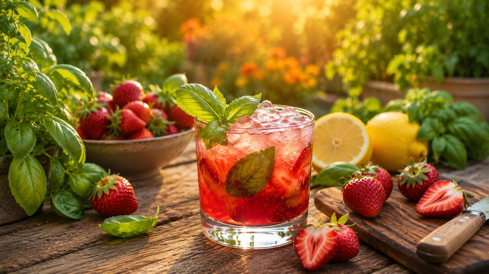
- 2 oz vodka
- 4–5 fresh strawberries, hulled
- 🌱 4 fresh basil leaves
- ¾ oz fresh lemon juice
- ½ oz simple syrup
- 2 oz soda water
- 4–5 fresh strawberries, hulled
- 🌱 4 fresh basil leaves
- ¾ oz fresh lemon juice
- ½ oz simple syrup
- 3 oz sparkling water
- 1 oz white grape juice
Muddle strawberries and basil in a shaker. Add lemon juice and simple syrup, fill with ice, shake well. Strain into a rocks glass over ice, top with soda water. Garnish with a basil leaf and strawberry slice.
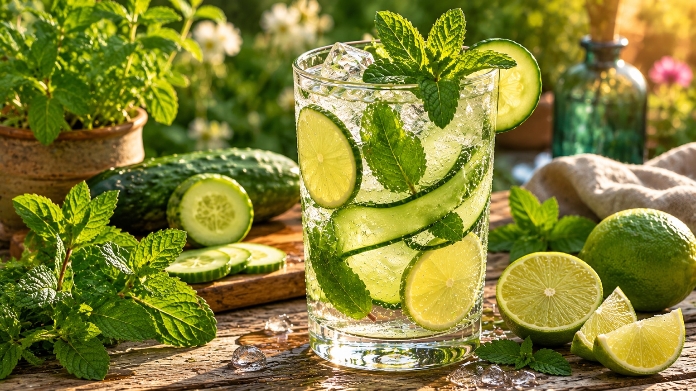
- 2 oz gin
- 🌱 4 thin cucumber slices
- 🌱 6 fresh mint leaves
- ¾ oz fresh lime juice
- 4 oz tonic water
- 🌱 4 thin cucumber slices
- 🌱 6 fresh mint leaves
- ¾ oz fresh lime juice
- ½ oz simple syrup
- 5 oz tonic water
Muddle cucumber and mint gently in a glass — don't overwork it. Fill with ice, add gin and lime, top with tonic. Give it one slow stir. Garnish with a cucumber ribbon and mint sprig.
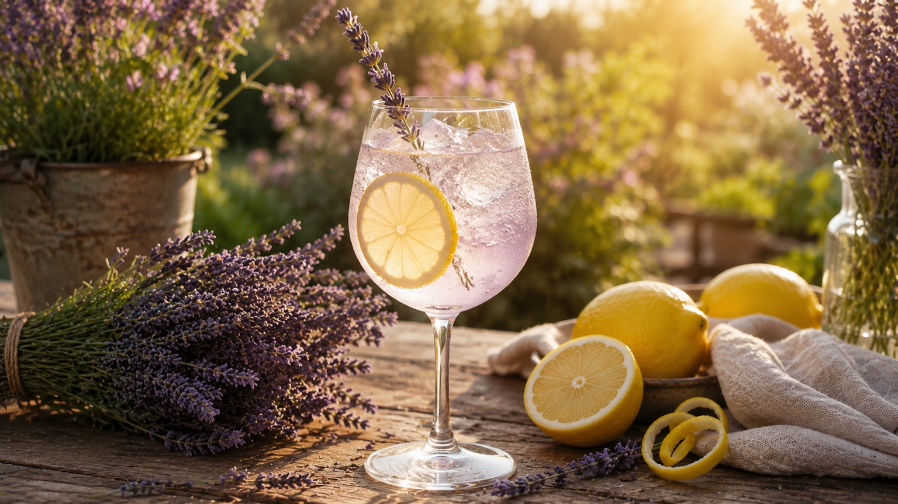
- 1 oz vodka
- 🌸 ¾ oz lavender syrup
- ¾ oz fresh lemon juice
- 3 oz prosecco
- Splash of soda water
- 🌸 ¾ oz lavender syrup
- ¾ oz fresh lemon juice
- 1 tsp honey
- 4 oz sparkling water
Combine vodka (or skip), lavender syrup, and lemon juice in a shaker with ice. Shake, strain into a wine or tall glass over ice, top with prosecco or sparkling water. Garnish with a lavender sprig and lemon wheel.
Lavender syrup: Simmer 1 cup water + 1 cup sugar + 2 tbsp dried lavender for 5 min. Cool and strain.
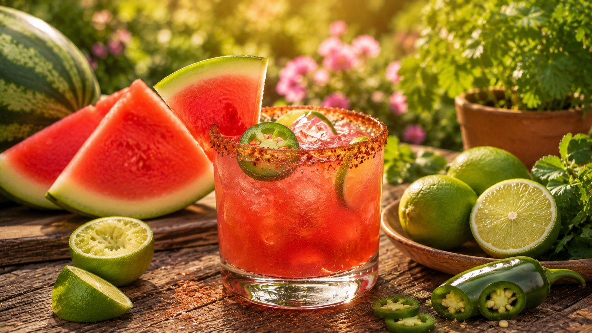
- 2 oz tequila blanco
- 3 oz fresh watermelon juice
- ¾ oz fresh lime juice
- ½ oz agave syrup
- 🌱 2–3 jalapeño slices
- Tajín rim
- 3 oz fresh watermelon juice
- ¾ oz fresh lime juice
- ½ oz agave syrup
- 🌱 2–3 jalapeño slices
- 3 oz sparkling water
- Tajín rim
Muddle jalapeño in shaker. Add remaining ingredients (except sparkling water for mocktail), fill with ice, shake hard. Strain into a tajín-rimmed glass over ice. Top mocktail with sparkling water. Garnish with a watermelon wedge and jalapeño slice.

- 2 oz gin
- 🌱 ¾ oz fresh thyme syrup
- ¾ oz fresh lime juice
- 🌱 1 sprig fresh rosemary
- 🌱 ¾ oz fresh thyme syrup
- ¾ oz fresh lime juice
- ½ oz simple syrup
- 4 oz soda water
Combine gin (or skip), thyme syrup, and lime in a shaker with ice. Shake well. Strain into a coupe or rocks glass. Garnish with a rosemary sprig — lightly slap it between your palms first to release the oils.
Thyme syrup: Simmer 1 cup water + 1 cup sugar + 8–10 fresh thyme sprigs for 5 min. Cool and strain.
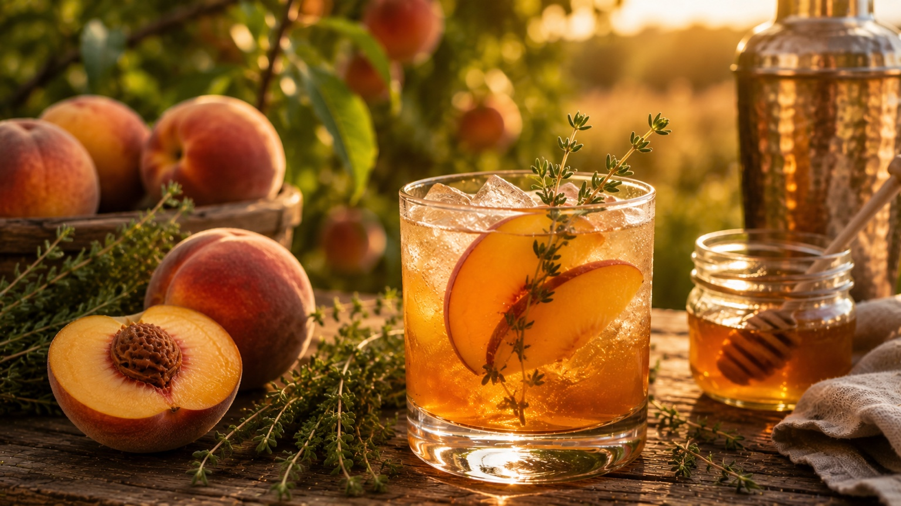
- 2 oz bourbon
- 2 oz fresh peach purée (or 3–4 slices muddled)
- ¾ oz fresh lemon juice
- ½ oz honey syrup (1:1 honey + warm water)
- 🌱 2 sprigs lemon thyme
- 3 oz peach nectar
- ¾ oz fresh lemon juice
- ½ oz honey syrup
- 🌱 2 sprigs lemon thyme
- 3 oz ginger beer
Muddle lemon thyme in shaker. Add peach, lemon juice, honey syrup, and bourbon. Fill with ice, shake well. Strain into a rocks glass over ice. Top mocktail with ginger beer. Garnish with a peach slice and thyme sprig.
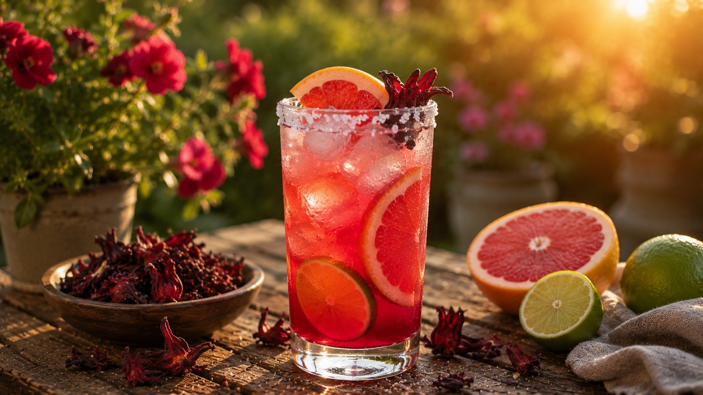
- 2 oz tequila blanco
- 🌸 1 oz hibiscus syrup
- 2 oz fresh grapefruit juice
- ½ oz fresh lime juice
- 2 oz sparkling water
- Salt rim
- 🌸 2 oz strong brewed hibiscus tea, cooled
- 2 oz fresh grapefruit juice
- ½ oz fresh lime juice
- ½ oz agave syrup
- 3 oz sparkling water
- Salt rim
Salt the rim of a tall glass. Fill with ice. Combine tequila (or tea), hibiscus syrup, grapefruit, and lime in a shaker with ice. Shake and strain into glass, top with sparkling water. Garnish with a grapefruit slice.
Hibiscus syrup: Simmer 1 cup water + 1 cup sugar + ¼ cup dried hibiscus flowers for 10 min. Cool and strain.
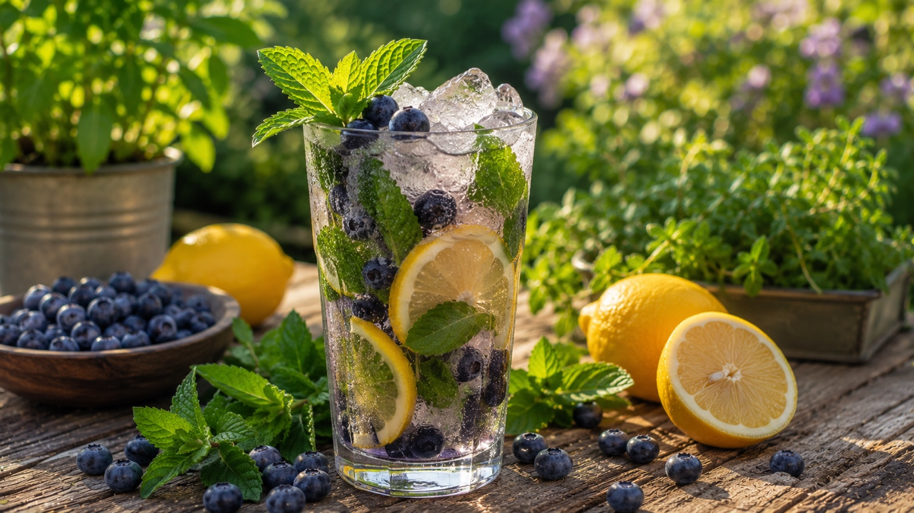
- 2 oz white rum
- ½ cup fresh blueberries
- 🌱 8 fresh mint leaves
- ¾ oz fresh lemon juice
- ½ oz simple syrup
- 3 oz soda water
- ½ cup fresh blueberries
- 🌱 8 fresh mint leaves
- ¾ oz fresh lemon juice
- ½ oz simple syrup
- 5 oz coconut water or sparkling water
Muddle blueberries and mint in a shaker. Add lemon juice, simple syrup, and rum. Fill with ice, shake well. Strain into a tall glass over ice, top with soda water. Garnish with a mint sprig and a few whole blueberries.
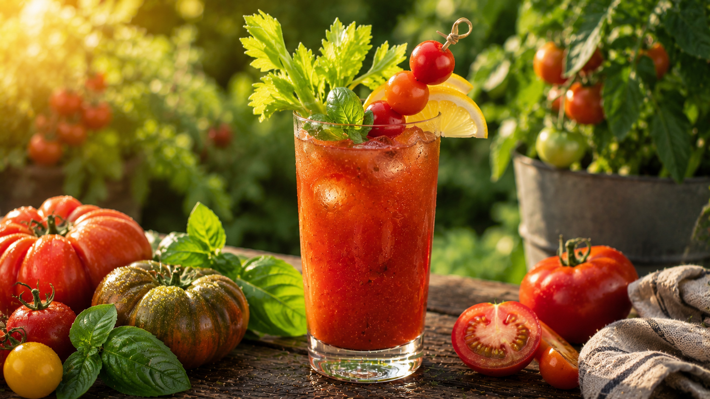
- 2 oz vodka
- 🌱 4 oz heirloom tomato water
- ½ oz fresh lemon juice
- 2 dashes hot sauce
- 1 tsp prepared horseradish
- Pinch of celery salt + cracked pepper
- 🌱 Drizzle of fresh basil oil
- 🌱 4 oz heirloom tomato water
- ½ oz fresh lemon juice
- 2 dashes hot sauce
- 1 tsp horseradish
- Pinch of celery salt + cracked pepper
- 🌱 Drizzle of basil oil
Combine all ingredients except basil oil in a shaker with ice. Roll gently between shaker and glass — don't shake hard. Pour into a tall glass over ice. Drizzle basil oil on top. Garnish with cherry tomatoes on a skewer and a celery stalk.
Tomato water: Blend ripe heirloom tomatoes, strain through cheesecloth overnight in the fridge. Basil oil: Blend 1 cup fresh basil + ½ cup neutral oil, strain.
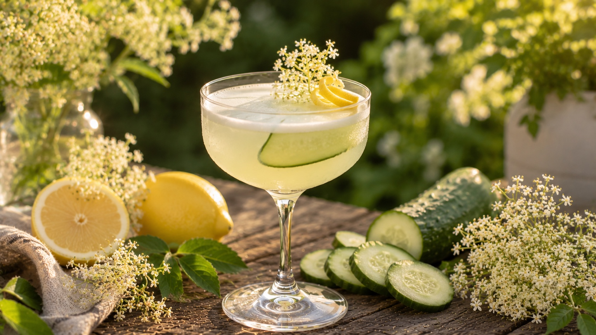
- 1½ oz gin
- ¾ oz elderflower liqueur (St-Germain)
- 🌱 4 thin cucumber slices
- ¾ oz fresh lemon juice
- ½ oz simple syrup
- 1 egg white* (or ½ oz aquafaba)
- 2 oz soda water
- 🌱 4 thin cucumber slices
- ¾ oz fresh lemon juice
- ½ oz elderflower tonic or cordial
- ½ oz simple syrup
- ½ oz aquafaba
- 3 oz soda water
Muddle cucumber in shaker. Add gin (or skip), elderflower, lemon, simple syrup, and egg white/aquafaba. Dry shake first (no ice) for 15 seconds to build the foam. Add ice, shake again. Strain into a chilled coupe or rocks glass, top slowly with soda water. The foam will rise — let it settle before garnishing with a cucumber slice.
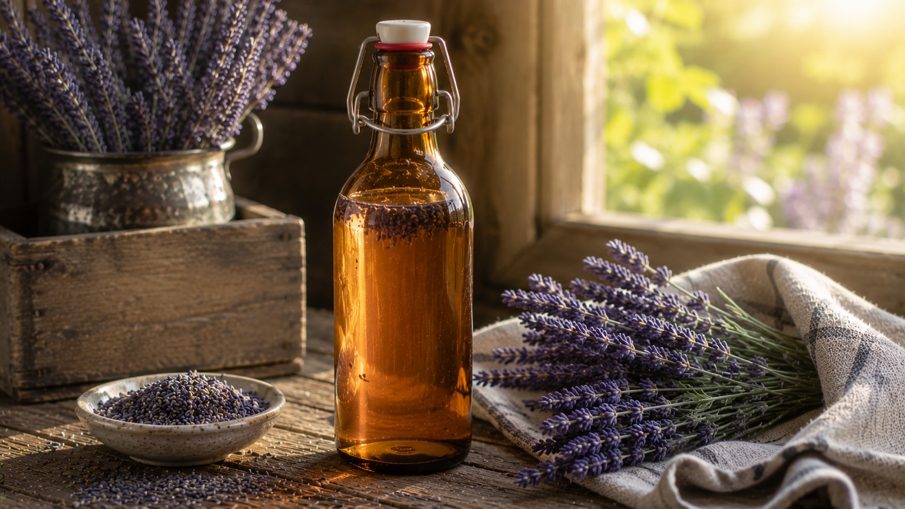
- 1 cup water
- 1 cup sugar
- 🌸 2 tbsp dried lavender buds
Combine water and sugar in a saucepan over medium heat. Stir until sugar dissolves — don't boil. Add lavender buds, remove from heat, steep 20–30 minutes. Strain through a fine mesh sieve. Cool completely, bottle, and refrigerate.
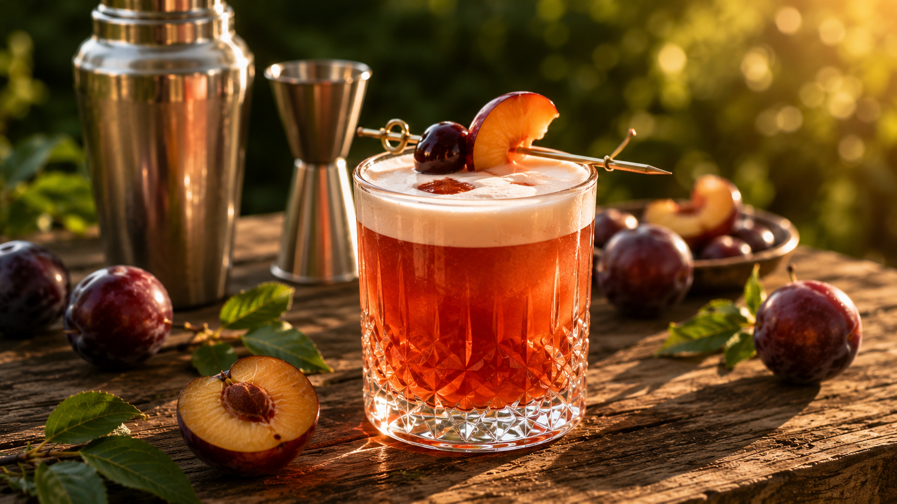
- 2 oz bourbon
- 🌱 ¾ oz homegrown plum simple syrup
- ¾ oz fresh lemon juice
- ½ oz Amaro Nonino (optional)
- 1 egg white (optional)
- 2 dashes Angostura bitters
- 🌱 ¾ oz homegrown plum simple syrup
- ¾ oz fresh lemon juice
- ½ oz aquafaba
- 4 oz chilled hibiscus tea
- 2 dashes aromatic bitters
Dry shake with egg white (no ice, 15 sec). Add ice, shake hard 12 sec. Double-strain into a chilled coupe. Dot with Angostura bitters and drag a toothpick through the foam.
Plum syrup: simmer 1 lb pitted plums + 1 cup sugar + 1 cup water 20 min. Strain. Keeps 3–4 weeks refrigerated. Full syrup recipe →
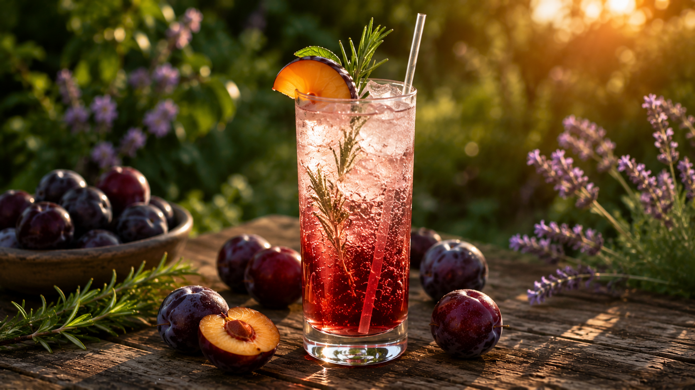
- 🌱 1 oz homegrown plum simple syrup
- ¾ oz fresh lemon juice
- 4 oz sparkling water
- 🌱 Fresh mint sprig — garnish
- Lemon wheel — garnish
Build over ice in a highball glass. Add syrup and lemon juice, stir briefly. Top gently with sparkling water poured down the inside of the glass. Slap a mint sprig and press into the drink.
Make ahead for a crowd: mix syrup and lemon in a pitcher, refrigerate. Add sparkling water per glass at serving to preserve carbonation.
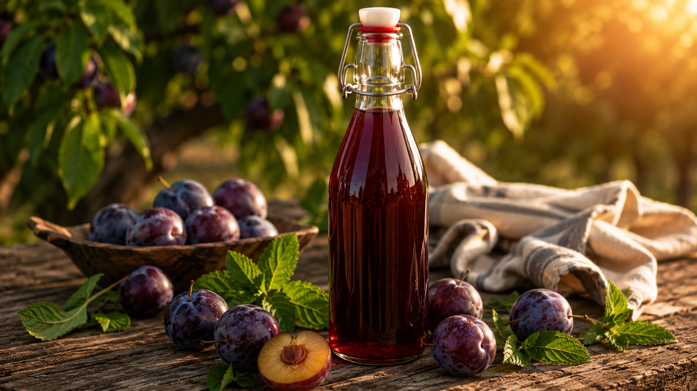
- 🌱 1 lb (450g) fresh plums, pitted
- 1 cup (200g) granulated sugar
- 1 cup (240ml) water
- 1 Tbsp fresh lemon juice (optional)
Combine plums, sugar, and water. Simmer 20 min until plums break down. Strain through fine mesh, pressing solids. Cool, seal, refrigerate. Keeps 3–4 weeks; freeze for up to 6 months.
Pull one pound of plums before the sugar goes into the jam pot — one harvest, two products. Makes ~1.5 cups.
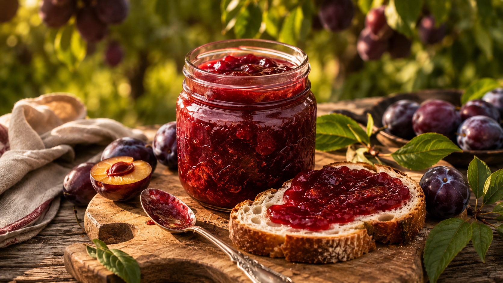
- 🌱 5.6 lb (2.54 kg) pitted plums
- 3.75 lb (1.7 kg) granulated sugar
- Juice of 2 lemons
- 1 cinnamon stick (during cooking)
- 1 tsp vanilla extract (after cooking)
Cook plums with lemon juice until soft. Add sugar gradually, bring to a rolling boil. Cook 20–35 min until set (220°F / plate test). Fill sterilized jars, leave ¼-inch headspace. Water-bath 10 min. Keeps 1 year sealed.
Adjust processing time for altitude per current USDA guidelines. Yields 5–6 pints or 8–10 half-pint jars.
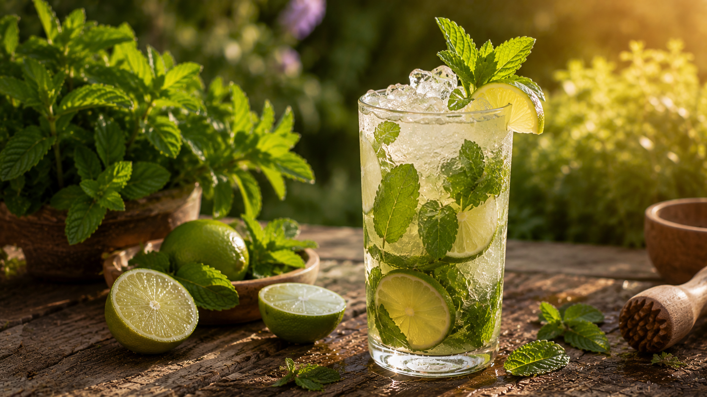
- 2 oz white rum
- 🌱 ¾ oz homegrown mint simple syrup
- ¾ oz fresh lime juice
- 2 oz soda water
- 🌱 Fresh mint sprig + lime wheel
- 🌱 ¾ oz mint simple syrup
- ¾ oz fresh lime juice
- 1 oz coconut water
- 4 oz soda water
- 🌱 Fresh mint sprig + lime wheel
Build over ice in a highball glass. Add rum, mint syrup, and lime juice — stir briefly. Top gently with soda water poured down the inside of the glass. Slap a mint sprig and press into the drink.
No muddling required. Mint syrup gives a cleaner, more consistent result than muddled fresh mint. Syrup recipe →
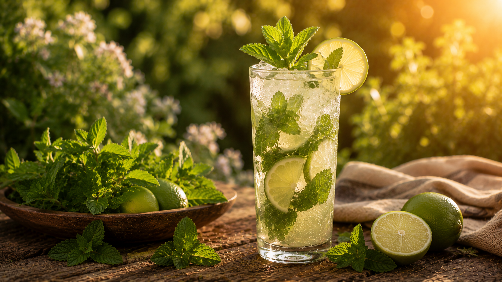
- 🌱 ¾ oz homegrown mint simple syrup
- ¾ oz fresh lime juice
- 4 oz sparkling water
- 🌱 Fresh mint sprig + lime wheel
Build over ice in a highball glass. Add mint syrup and lime juice, stir briefly. Top gently with sparkling water. Slap a mint sprig and press into the drink. Serve immediately.
Scale for a crowd: mix syrup and lime in a pitcher ahead of time. Add sparkling water per glass at serving to preserve carbonation.
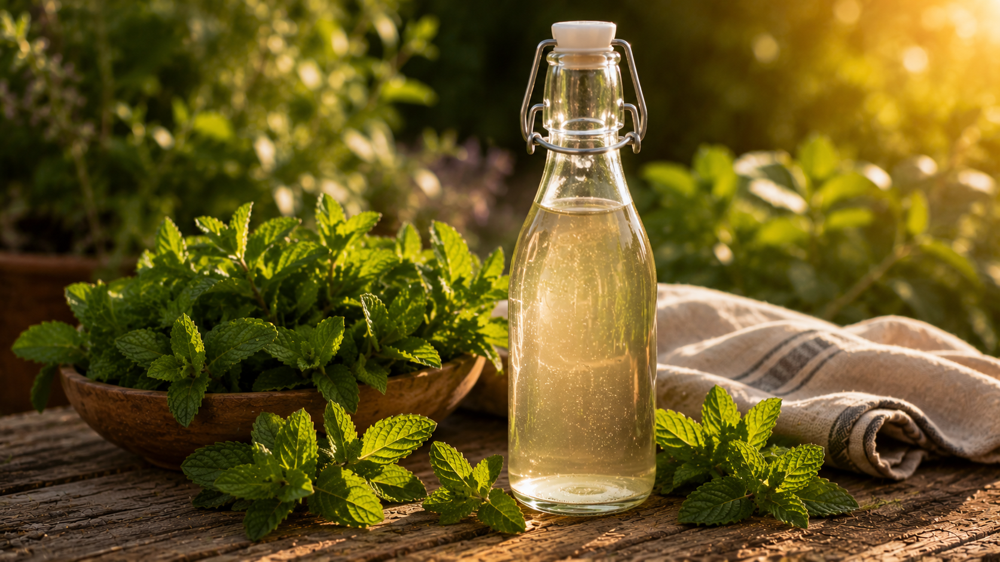
- 1 cup water
- 1 cup sugar
- 🌱 Large handful of fresh mint (stems and all)
Combine water and sugar over medium heat, stir until dissolved, remove from heat. Add mint and steep 15–20 minutes — longer for stronger flavor. Strain and press the mint to extract all the liquid. Cool, bottle, refrigerate.

- 1 cup water
- 1 cup sugar
- 🌱 6–8 fresh thyme or rosemary sprigs
Combine water and sugar, heat until dissolved. Add sprigs and simmer gently 5 minutes. Remove from heat, steep another 10 minutes, then taste. Strain well — rosemary gets bitter if over-steeped. Cool, bottle, refrigerate.

- 2 oz bourbon
- 🌱 ¾ oz rosemary syrup
- ¾ oz fresh lemon juice
- ½ oz egg white* or aquafaba (optional)
- 🌱 Rosemary sprig + orange peel
- 🌱 ¾ oz rosemary syrup
- ¾ oz fresh lemon juice
- ½ oz simple syrup
- ½ oz aquafaba
- 3 oz sparkling water
Dry shake with egg white first (no ice, 15 sec). Add ice, shake again. Strain into a rocks glass over a large cube. Express an orange peel over the drink before garnishing. Slap the rosemary sprig and lay across the rim.
Rosemary syrup: Simmer 1 cup water + 1 cup sugar + 6–8 rosemary sprigs 5 min. Steep 10 min. Strain. Keeps 2–3 weeks.